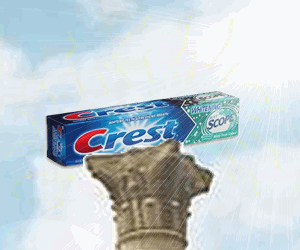

5000 years ago... Apollo Beach set forth to the Gobi Desert in search of the ultimate treasure. Fortold to him by a ghost, he was to trek in the desert for 18 days and 23 nights to the exact center of the wasteland. Apollo made the rigourous journey, losing 1 arm and leg in the process. Upon arrival, he was greeted with the awesome power of Crest.

As he approached, a figure from behind the pillar emerged. It was none other than GEROGRE. The two men immediately went to battle, and legend has it that they fought for 50000 eons in a space time warp that only lasted a second in the world we know of. After the dust had settled, Apollo took the Crest and shared it with the world. With the original tube made from grinded rocks and mule shit, Crest evolved through science to become what it is today: The Paste of Immortality.